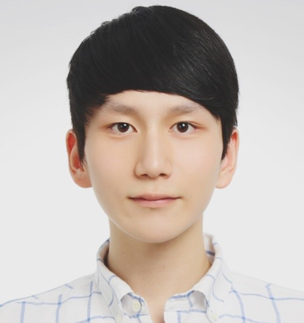

YoungSeok (Alex) Na
From: Watervliet, NY
Mail: yn224 -at- cornell.edu
Courses currently enrolled in:
- CS 3110: Data Structures and Functional Programming
- ECE 3030: Electromagnetic Fields and Waves
- ECE 3100: Introduction to Probability and Inference for Random Signals and Systems
- ECE 4750 / CS 4420: Computer Architecture
About Me
I am currently an undergraduate junior majoring in Electrical and Computer Engineering and Computer Science at
Cornell University. I have been working under Professor Zhiru Zhang at
Computer Systems Laboratory for
HeteroCL Project as an undergraduate research assistant since Jan. 2020.
Currently, I am also serving as an Undergraduate Teaching Assistant under the Department of Physics for the course
"Physics III: Oscillations, Waves, and Quantum Physics" (PHYS 2214).
In the past, I have had teaching experience with the course
"Physics I: Mechanics and Heat" (PHYS 1112) on FA'19.
Education
B.S. in Electrical and Computer Engineering and Computer Science (dual degree), Cornell University.
2018.06 ~ 2022.05 (Expected)
Skills
Programming languages: C/C++, Verilog, Java, Python
Hobbies: Guitar
Languages: English (fluent), Korean (fluent)